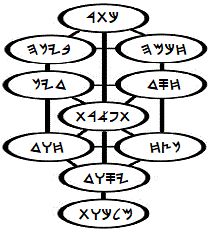
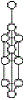
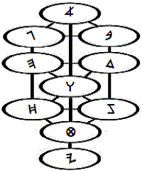

|
 |
The Sephiroth: A Second Look 
|
 |
To resume discussion of the sephiroth from another perspective, or from another partition of the mind, it will be helpful to recall that my preliminary focus, some thirteen years after baptism in the Holy Spirit and just prior to water baptism, was upon Yesod-- on Foundation. My thoughts of Kingdom, which is Malkuth in its congregational sense, seemed-- even at that advanced stage of my life in the Spirit-- to belong to a distant future. I hungered for the fellowship of those moving from the foot of the cross to the tent of meeting, but I imagined that the nature of my calling precluded it, for the moment: Clearly, I had been separated-- not by the workings of intellect, but by the workings of the Spirit in the events of my life. I had yet to learn that there are many clocks in the universe, and that everything is always-- whatever we might think-- right on time. At the time of my first acquaintance with Adam Kadmon, I had also just begun serious study of scripture. Expert at being unprepared, I was not an unwilling captive to the spiritual whirlwinds in which I walked; and. even now at this late writing, immature self-accusation would turn my prayers into sin, were it not for an unreasonable faith in God's mercy (2 Cor. 12:9). With my honor wrapped in lament-- then, as also now, I looked upward within the symbol of the Tree of Life, finding that the right- and left-hand paths were blocked to my understanding. To my shame, ignorance was my means of fulfilling the saying, "turn not from it to the right hand or to the left" (Josh. 1:7). I simply had no idea what course to take (John 9:41). The only path by which I could continue to use the symbol as a check against my thoughts (and I was beginning to have real doubts as to whether I should-- not because of a foreboding of evil, but because of burgeoning vision, which I was certain I didn't deserve), was to proceed upward from Yesod on the center path. I just didn't know any better, but I was determined to know the Savior as he appears on the heavenly cross, from the foundation of time (Rev. 13:8)! So many years ago, I had come to a place where I simply had to measure the Reality that was calling me; and now, as water baptism seemed the thing to do, I again heard the call: not as coming from an exterior understanding, but as coming from within: from Tipareth, the sixth sphere. Knowing more was not an obligation, but an inevitability. |
Looking Again |
sitemap |
JjJ |
bookmenu |
| |||||||||